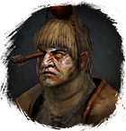

Открыть в интерактивной вики →
| Уровень | 29 |
|---|---|
| Сила (PvE) | 437 |
| Аспект арены | Velhar |
| Здоровье | 1750 |
| Мана | 1200 |
| Выносливость | 1200 |
Статистика
 |  |  | |||
| Уровень: - | Уровень: 29 | Уровень: - | |||
Здоровье: - Мана: - Выносливость: - | Здоровье: 1 750 Мана: 1 200 Выносливость: 1 200 | Здоровье: - Мана: - Выносливость: - |
Умения
| Пыль в глаза | Стратегический выстрел Точный выстрел Отравленная стрела | Обостренные чувства |
Команда
-
Локация
Вымершее поселение
Иммунитеты / особые умения
-
Дроп
-